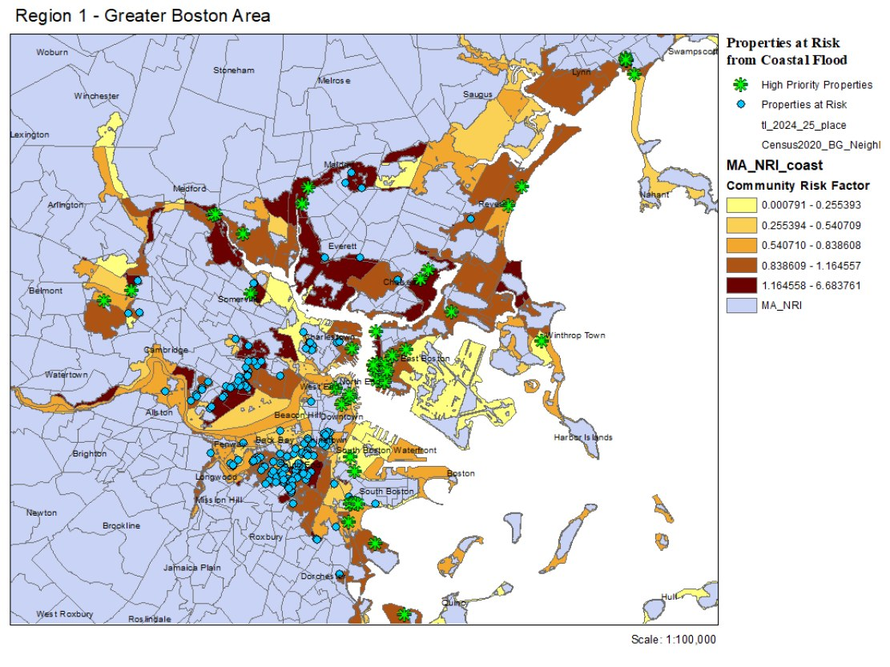

Student research + housing policy
Vulnerability of Special Needs Populations to Sea-Level Rise in Massachusetts
A UPCD 730 group project examining elderly and disabled residents in subsidized housing at risk from sea-level rise.

Overview
This student research project assessed the vulnerability of elderly and disabled populations living in subsidized housing in the Boston area.